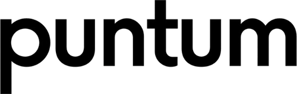

Punten per kamer
Puntum telt de punten van een woning en deelt ze per kamer toe, zodat je per kamer ziet waar het aantal vandaan komt.

Besloten bèta
Puntum is een webapp voor onzelfstandige woonruimte. Je ziet het puntenaantal en de maximale huur per kamer, en wat een verbetering oplevert en kost.
Puntum telt de punten van een woning en deelt ze per kamer toe, zodat je per kamer ziet waar het aantal vandaan komt.
Uit het puntenaantal volgt de maximale huur per kamer.
Een keuken, een beter energielabel of een extra kamer: je vergelijkt de huidige situatie met een scenario en ziet wat het oplevert en kost.
De berekening volgt het Beleidsboek WWSO van de Huurcommissie, januari 2026.